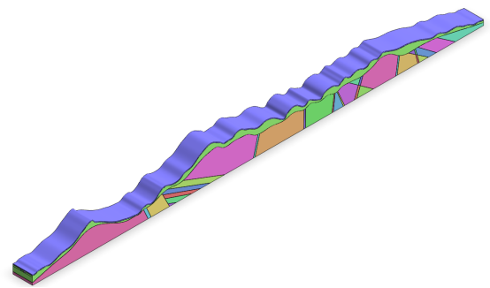
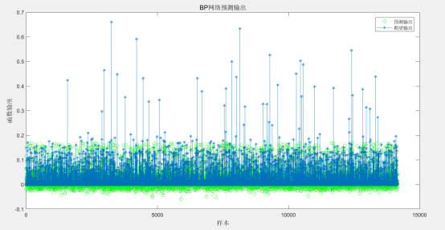
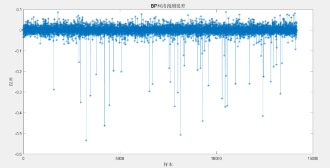
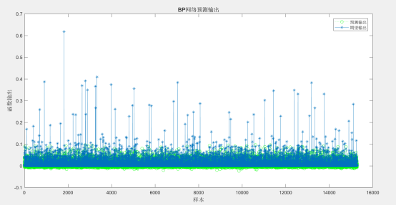
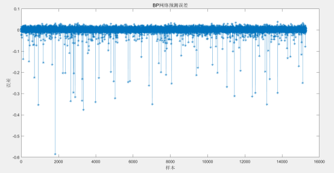

明月山 3 号隧道位于宜春市洪江乡仰山附近，隧道起于南坑村后山麓沟谷地，穿越连绵山脉终于省道S242 王坑村附近，为一座分离式隧道，其起止桩号为ZK37+020～ZK40+660/YK36+975～YK40+670，隧道长度为3640/3695 米，单幅隧道净空（宽×高）11*5 米。进口洞门形式拟采用削竹式，出洞口拟采用削竹式，电力照明，机械通风，按照《公路隧道设计规范》第一册土建工程（JTG 3370.1-2018）表1.0.4 分级，该隧道属于公路特长隧道。隧道入口段地层主要为全强风化花岗片麻岩及残破积粉质黏土，全风化层较厚，岩体风化剧烈，裂隙发育，为极破碎至破碎围岩，为土质碎石围岩，松散状结构。隧道洞身工程地质情况复杂，岩性主要以花岗片麻岩混合岩带过渡到千枚状砂岩、千枚岩、含炭千枚岩变质砂岩等，围岩岩体为较破碎至较完整，局部破碎至极破碎。隧址区内发育有断层泥，岩体极破碎，呈弱固结土状，位于隧道洞室顶部较高处，局部存在浅埋段，对隧道洞室围岩稳定影响较小，揭露有多个的裂隙带。隧道出口段地层主要为残积层及全强风化千枚状砂岩，为极破碎至破碎围岩，为土质碎石围岩，散体状结构。其中隧道左幅：Ⅲ级围岩占16.76%，Ⅳ级围岩占62.04%，Ⅴ级围岩占21.20%。隧道右幅：Ⅲ级围岩占16.30%，Ⅳ级围岩占56.69%，Ⅴ级围岩占27.01%。隧道开挖方法为双侧壁导坑法。
依据施勘报告，隧道轮廓截面洞型取“五心圆+仰拱”型。根据经验，侧宽的分析范围取为距离隧道内轮廓边缘3~5倍隧道净宽的区域，深度的分析范围取为距离隧道内轮廓底部3~5倍隧道净高的区域。模型以反重力方向为Z方向正向，隧道延伸纵向为Y方向正向，隧道，根据右手螺旋定理，隧道径向为X方向。

图 1 明月山3号隧道几何模型

图 2. 明月山3号隧道出口预测输出和期望输出图

图 3. 明月山3号隧道出口预测误差图
由图2可知，明月山3号隧道出口预测输出和期望输出结果基本吻合，走势基本一致。由图3可知预测数据和真实数据两者的误差基本在-0.05~0.05之间，误差范围较小表明神经网络预测结果基本满足要求。

图 4. 明月山3号隧道入口预测输出和期望输出图

图 5. 明月山3号隧道入口预测误差图
由图4可知，明月山3号隧道出口预测输出和期望输出结果基本吻合，走势基本一致。由图5可知预测数据和真实数据两者的误差基本在-0.05~0.05之间，误差范围较小表明神经网络预测结果基本满足要求。